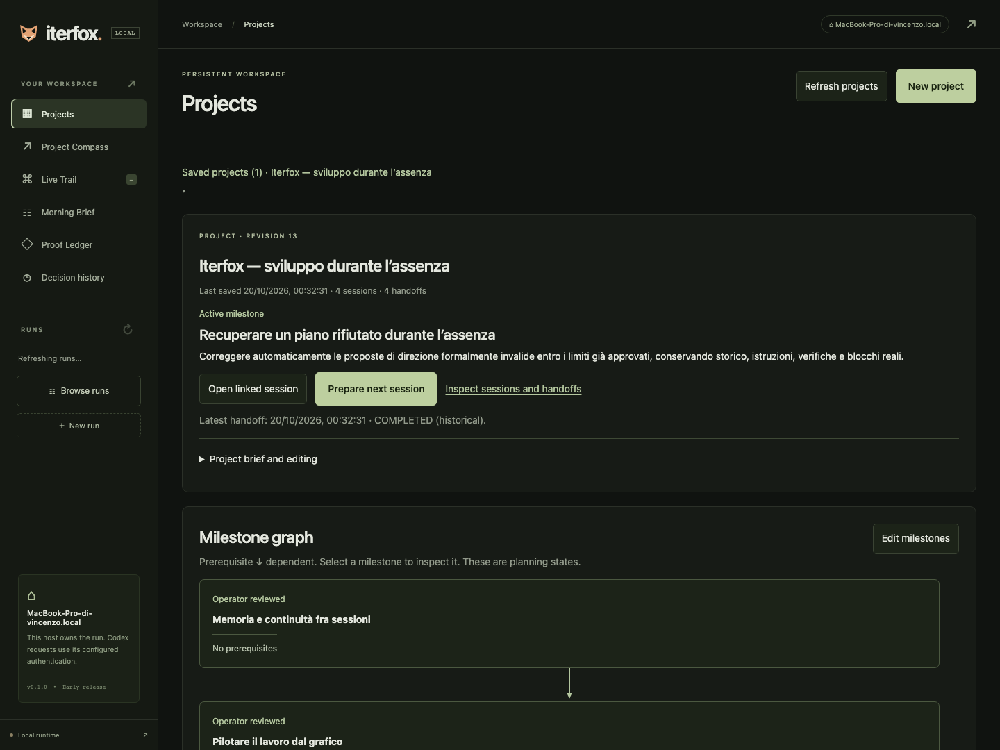
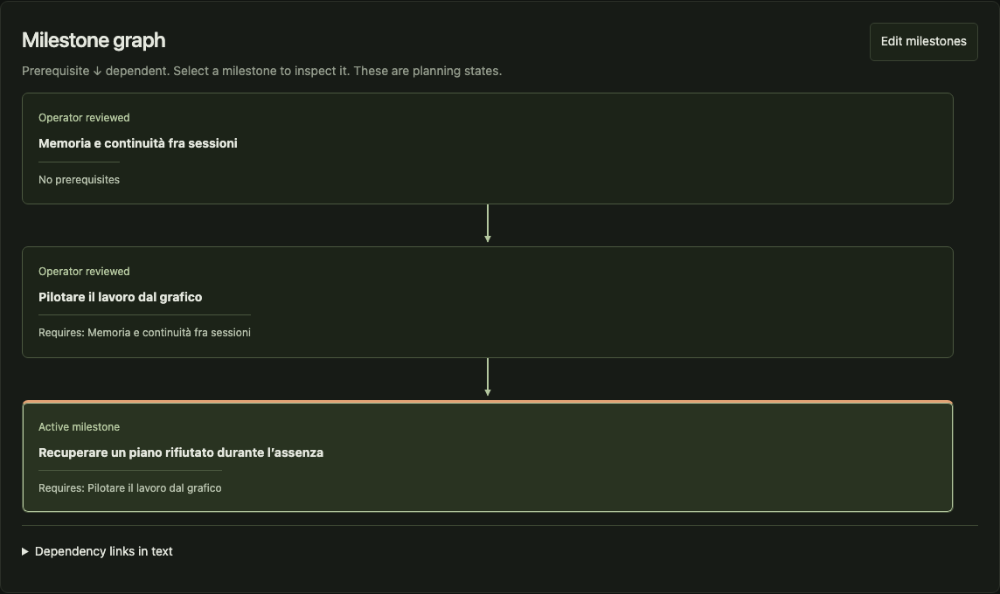
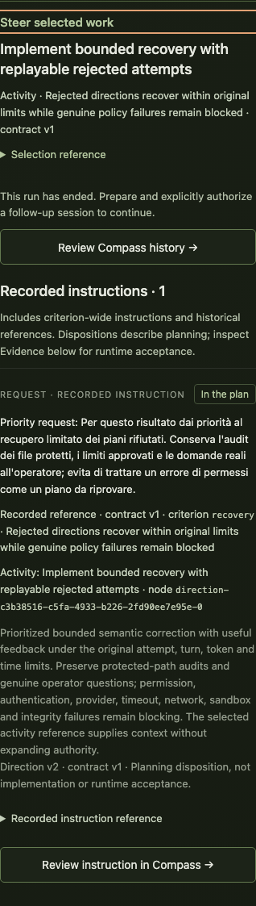

Prova reale · 19–20 ottobre 2026 · macOS · Codex gpt-6.1-sol
Iterfox ha sviluppato la propria continuità di progetto.
Tre missioni completate sul prodotto: memoria persistente, istruzioni dal grafico e correzione limitata dei piani incoerenti. Un tentativo fermato per un conflitto nei test resta nello storico.
Il risultato concreto è un progetto che conserva direzione, decisioni, milestone e consegne fra sessioni. All’interno della sessione autorizzata, Iterfox implementa, verifica e cerca ciò che manca ancora all’obiettivo. Il passaggio alla sessione successiva richiede oggi un checkpoint revisionato e una nuova autorizzazione.
Guida operativa · Ricevuta strutturata e provenienza · Apri l’interfaccia locale
3 + 1missioni completate + tentativo fermato
73 / 9test di regressione / casi Chrome passati; 7 test opzionali saltati
4 consegnecon provenienza, nello stesso progetto persistente
Come si governa nella pratica
- Projects conserva la direzione. Scrivi risultato, vincoli, decisioni e ipotesi. Le milestone mostrano prerequisiti e stato di revisione; non sono un elenco di prompt da eseguire alla cieca.
- Autorizzi una missione abbastanza ampia. Con Prepare next session riusi il contesto; rivedi criteri, verifiche, percorsi e durata. Il piano interno può evolvere senza un messaggio per ogni attività.
- Live Trail governa il lavoro in corso. Selezioni un’attività, leggi prove e stato, poi invii una richiesta, decisione o ipotesi riferita a quel punto. Compass registra come viene recepita al confine di attività.
- Al ritorno rivedi il risultato. Morning Brief e Proof Ledger mostrano cambiamenti, verifiche e questioni aperte. Il completamento tecnico non decide al posto tuo l’accettazione di prodotto.

Progetto reale, revisione 13: quattro sessioni collegate e quattro handoff. Memoria e grafico sono stati revisionati dall’assistente per continuare; il recupero resta attivo per la revisione dell’utente.
Che cosa ha sviluppato
Memoria del progetto
Brief, decisioni e ipotesi separate, dipendenze fra milestone, sessioni collegate e consegne derivate dallo storico. Le prove passate restano storiche: una nuova sessione riparte con verifiche pendenti.
Direzione dal grafico
Comandi contestuali con titolo e riferimento risolvibili dal modello, bozze separate e storico delle istruzioni. Una risposta incerta conserva il testo e richiede di verificare lo storico prima di reinviare.
Recupero dei piani
Le proposte Compass semanticamente invalide ricevono un tentativo di correzione con il motivo del rifiuto, entro i limiti approvati. Errori di permessi, provider, integrità e file protetti restano blocchi reali.
Le quattro esecuzioni, senza omettere gli interventi
Non sono arrivati altri messaggi di lavoro dall’utente durante queste missioni. L’assistente ha operato per la delega ricevuta: ha preparato verifiche e dipendenze, revisionato e committato i checkpoint e autorizzato ogni nuova sessione. Questi passaggi fra run non sono ancora automatizzati dal prodotto.
Il valore osservato oltre ai test verdi
Nella missione A, il supervisore ha richiesto una verifica dell’intero flusso e ha individuato una dipendenza che poteva attraversare una milestone estranea su mobile. Nella B ha trovato che il modello riceveva l’ID selezionato senza una mappa affidabile al titolo dell’attività: ha creato e svolto il lavoro per renderlo risolvibile. Nella C2 ha richiesto di aggiornare una documentazione rimasta indietro rispetto alle prove. I controlli verdi non hanno chiuso automaticamente l’obiettivo.
Questo dimostra un ciclo concreto di sviluppo, controllo e revisione su un progetto reale. Non misura ancora quanto riduca il tuo tempo al ritorno o se produca più valore di Codex diretto.
Una vera istruzione dal grafico

La roadmap persistente del progetto, distinta dal grafo operativo della singola run.
Nota 32111558-b78e-4ccf-a34b-137b19852b1c: associata al lavoro reale e mostrata come In the plan. Riafferma l’obiettivo già approvato; non prova da sola un vantaggio causale sull’ordine di lavoro.Le verifiche finali
- 73 test di regressione passati, 7 opzionali saltati; 9 casi Chrome passati. Typecheck e build riusciti. Sette casi protetti di recupero comprendono 40 prefissi di uno storico congelato. La proiezione finale dei quattro tentativi reali coincide con quella dei loro runtime originali.
- Otto controlli browser aggiuntivi sul codice finale. Bozze per selezione, 503, invio da tastiera, risposta ritardata, vera risposta 201 salvata ma persa a valle, replay, 390px e sessione completata. Sono fixture deterministiche esplicite, senza chiamate al modello.
- Prova finale con Codex reale: passata in 4 min 20 s. Chrome invia una nota contestuale, poi una ripresa esplicita avvia la fixture. Dopo la prima risposta valida del modello, il test inserisce un riferimento invalido. Due chiamate reali di orientamento consentono la correzione, poi sviluppo e verifica raggiungono COMPLETED con tre criteri passati, contratto strutturalmente identico e nessun altro messaggio dell’operatore.
- Interfaccia reale ispezionata a 1440px e 390px. Progetto persistente e istruzione effettivamente registrata sono visibili; niente overflow orizzontale o errori di pagina nei capture finali. I flussi di recupero e riavvio del progetto sono stati osservati in audit separati, con limiti di versione conservati.
Correzione del report della missione B. Una prova precedente riportava contractPreserved:false per un confronto di stringhe sensibile all’ordine delle proprietà JSON. Il dato originale è conservato. Dopo la missione ho rafforzato il test con uguaglianza strutturale e controllo sullo stato finale; la nuova prova reale passa con contractPreserved:true.
Che cosa resta da costruire e dimostrare
Il prossimo passo di prodotto è rendere semplice il passaggio controllato fra sessioni: checkpoint revisionato, preparazione dell’ambiente e scelta del successivo obiettivo entro una delega chiara. Oggi questa parte richiede ancora l’operatore. Non c’è uno scheduler che autorizzi in autonomia una catena indefinita di missioni.
Non è stata eseguita una notte intera senza supervisione, né un confronto nuovo con Codex diretto. Il guasto della prova finale è introdotto apposta; il task iniziale di quella prova è una fixture. Pianificazione, revisione e giudizi qualitativi usano la stessa integrazione Codex. Il collaudo su un host SSH remoto resta da eseguire; per lavorare su questo Mac acceso non serve un server aggiuntivo.
Le prove sono attribuite agli snapshot originali conservati: questo report e l’aggiornamento dei README cambiano solo la documentazione. Nessun push, merge o deploy è stato eseguito.